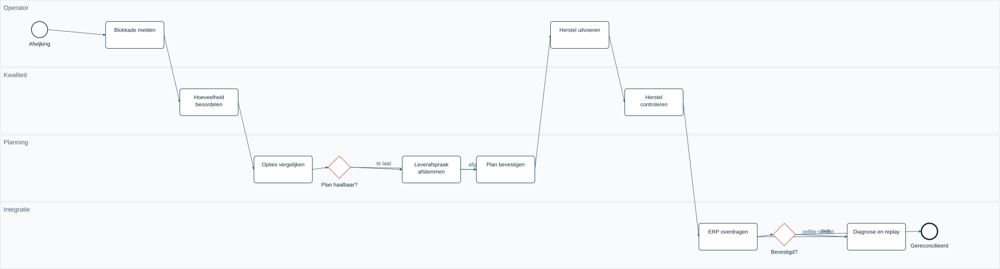

Een kwaliteitsblokkade verandert het productieplan
Een functionele-analysecase die kwaliteitsbesluiten, haalbare herstelcapaciteit en ERP-bevestiging met elkaar verbindt.
Onafhankelijke, AI-ondersteunde portfoliocase · fictieve organisatie · Philippe Godfroy
De vraag achter de blokkade
Van een partij van 100 m² is 40 m² geblokkeerd. Sales wil leveren, Kwaliteit wil controle en Planning wil weten welke productie nodig is. De analyse verbindt die beslissingen zonder bevoegdheden te vermengen.
Lees de onderbouwingDrie keuzes die het gedrag bepalen
Kwaliteit houdt het vrijgaverecht. Een plan is geen voorraad. Een verloren bevestiging wordt op dezelfde sleutel herhaald. De keuze voor een aparte applicatie volgt pas na onderzoek van de ERP-standaard.
Lees de onderbouwingEen controleerbaar proces
Melding → kwaliteitsbesluit → tekort → haalbaarheidsvergelijking → plan → gereedmelding → herkeuring → ERP-bevestiging. Een late levering blijft zichtbaar.

Van behoefte tot acceptatie
De canonieke catalogus verbindt iedere functionele requirement met regels, acceptatiegevallen en een meetpunt. Hoeveelheden en statusovergangen zijn uitvoerbaar getest.
Lees de onderbouwingDuidelijke systeemgrenzen
Het doelontwerp houdt voorraadadministratie in ERP. Een beperkte workbench ondersteunt beslissingen. De browserdemo bevat echte regels, lokale opslag en een gesimuleerd ontvangstregister.
Lees de onderbouwingERP-fit vóór maatwerk
Toets inspectielots, gebruiksbesluit, herwerkorder, beschikbaarheid en boekingsdocumenten in de echte omgeving. De OpenAPI-facade is een eigen ontwerp, geen officiële SAP-interface.
Lees de onderbouwingValideer ook wat niet mag
Onbevoegde vrijgave, een foutieve som, verouderd plan, verloren bevestiging en oudere berichten zijn geen randnotities: zij bepalen het testontwerp. Eindgebruikers-UAT is voorbereid.
Lees de onderbouwingVan prototype naar een beheerste pilot
Eén lijn, één ploeg, gereconcilieerde gegevens en expliciete go/no-go. Herstel van ERP-boekingen vraagt gecontroleerde compensatie. Een demo-reset is geen productie-rollback.
Lees de onderbouwingOok een negatief bouwadvies is een uitkomst
Het illustratieve rekenmodel laat zien dat tijdsbesparing alleen maatwerk niet rechtvaardigt. De aanbeveling is standaardonderzoek en een beperkte pilot met nulmeting.
Lees de onderbouwingGrenzen van het bewijs
Fictieve organisatie, data en workshopscenario’s. Geen SAP-runtime, machinebesturing, serverautorisatie of echte gebruikersacceptatie. De kandidaat moet de AI-ondersteund uitgewerkte aanpak zelfstandig leren verdedigen.
Lees de onderbouwing